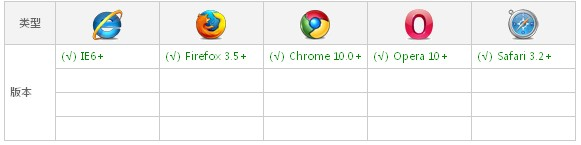

@font-face是CSS3中的一个模块，他能够加载服务器端的字体文件，让客户端显示客户端所没有安装的字体。
也可以理解为@font-face主要是把自己定义的Web字体嵌入到你的网页中。
浏览器兼容性测试通过：[IE6+|Firefox3.5+|Chrome4+|Safari3+|Opera10+|iOS Safari4.2+]
HTML:
<div class="as-fontface">^Hi,I'm Alice.Just for fun,Oh yeah!</div>
CSS:
/**
local('PC自带字体')
url('字体服务器地址') format('[truetype|eot|woff|svg|etc.]帮助浏览器识别')
可通过fontsquirrel提供的在线字体转换获取所需格式
*/
/* 按兼容要求配置 src url */
@font-face {
font-family: 'JennaSue'; /* 字体名，可自定义 */
src: url('./font/JennaSue.eot'); /* fix ie9 */
src: url('./font/JennaSue.eot?#iefix') format('eot'), /* ie4~ie8*/
url('./font/JennaSue.ttf') format('truetype'); /* modern browser safari in iOS */
}
/* 通过font-family引用 */
.as-fontface {
font-family: 'JennaSue',Tahoma; /* 可设置替补字体 */
font-size: 60px;
line-height: 100px;
}
.complete{
color: #888;
}
@font-face ：{属性: 取值;}
@font-face {
font-family: <YourWebFontName>;
src: <source> [<format>][,<source> [<format>]]*;
[font-weight: <weight>];
[font-style: <style>];
}

说到浏览器对@font-face的兼容问题，这里涉及到一个字体format的问题，因为不同的浏览器对字体格式支持是不一致的，这样大家有必要了解一下，各种版本的浏览器支持什么样的字体，前面也简单带到了有关字体的几种格式，下面我就分别说一下这个问题，让大家心里有一个概念：
.ttf字体是Windows和Mac的最常见的字体，是一种RAW格式，因此他不为网站优化,支持这种字体的浏览器有【IE9+,Firefox3.5+,Chrome4+,Safari3+,Opera10+,iOS Mobile Safari4.2+】；
.otf字体被认为是一种原始的字体格式，其内置在TureType的基础上，所以也提供了更多的功能,支持这种字体的浏览器有【Firefox3.5+,Chrome4.0+,Safari3.1+,Opera10.0+,iOS Mobile Safari4.2+】；
.woff字体是Web字体中最佳格式，他是一个开放的TrueType/OpenType的压缩版本，同时也支持元数据包的分离,支持这种字体的浏览器有【IE9+,Firefox3.5+,Chrome6+,Safari3.6+,Opera11.1+】；
.eot字体是IE专用字体，可以从TrueType创建此格式字体,支持这种字体的浏览器有【IE4+】；
五、SVG(.svg)格式：.svg字体是基于SVG字体渲染的一种格式,支持这种字体的浏览器有【Chrome4+,Safari3.1+,Opera10.0+,iOS Mobile Safari3.2+】。
这就意味着在@font-face中我们至少需要.woff,.eot两种格式字体，甚至还需要.svg等字体达到更多种浏览版本的支持。
为了使@font-face达到更多的浏览器支持，Paul Irish写了一个独特的@font-face语法叫Bulletproof @font-face:
@font-face {
font-family: 'YourWebFontName';
src: url('YourWebFontName.eot?') format('eot');/*IE*/
src:url('YourWebFontName.woff') format('woff'), url('YourWebFontName.ttf') format('truetype');/*non-IE*/
}
但为了让各多的浏览器支持，你也可以写成：
@font-face {
font-family: 'YourWebFontName';
src: url('YourWebFontName.eot'); /* IE9 Compat Modes */
src: url('YourWebFontName.eot?#iefix') format('embedded-opentype'), /* IE6-IE8 */
url('YourWebFontName.woff') format('woff'), /* Modern Browsers */
url('YourWebFontName.ttf') format('truetype'), /* Safari, Android, iOS */
url('YourWebFontName.svg#YourWebFontName') format('svg'); /* Legacy iOS */
}
实践出真知